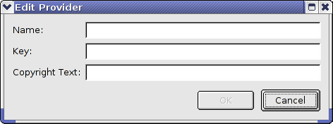
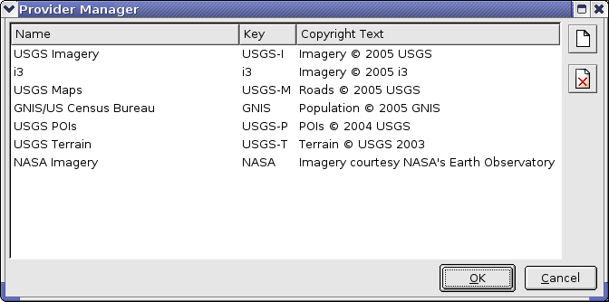

The Google Earth Enterprise Fusion tutorial data is provided on the Google Earth Enterprise Fusion installation DVD and should have been installed in /opt/google/share/tutorials/fusion/ on your workstation or network. In addition, your system administrator should have configured a tutorial environment for you to work on the tutorial lessons, keeping your practice data separate from your live production data.
If Google Earth Enterprise Fusion or the tutorial files are not installed or you encounter an error message that tells you that a tutorial source file is not readable or you cannot save a resource, contact your system administrator or refer to the Google Earth Enterprise Administration Guide to install the files and configure the tutorial environment before saving any practice data.
Before you begin the tutorial, read Chapter 1 of the Google Earth Enterprise Fusion Reference Guide to familiarize yourself with the Google Earth Enterprise suite of applications and for a good overview of Google Earth Enterprise Fusion. Then follow the steps in this lesson to begin learning about the Google Earth Enterprise Fusion user interface and to perform the initial set-up tasks recommended before you begin importing data.
There are two occasions when you must select a different asset root:
This section explains how to select a different asset root.
Caution: Even though your source volumes and asset roots are separate for each user or for the tutorial and production data, there is only one publish root on each virtual server for Earth databases and one for Map databases.
When two users are sharing a single workstation, both users are publishing to the same publish root. When one user publishes a database on that workstation, it overwrites any database that might have been published previously by another user on that same workstation. Likewise, if you are switching back and forth between tutorial and production data on the same workstation, it is possible to overwrite a production database with a tutorial database and vice versa. Of course, you can republish the desired database to make it available to Google Earth EC again.
/etc/init.d/gefusion stopgeselectassetroot --assetroot /username/assetswhere username is the name you or your system administrator used when configuring the tutorial asset root. (If you do not know the path of your tutorial asset root, contact your system administrator.)
/etc/init.d/gefusion startfusion (or fusion & to return to the Linux prompt).
When the application starts, the Google Earth Enterprise Fusion graphical user interface (GUI) appears. Refer to the Fundamentals chapter of the Google Earth Enterprise Fusion Reference Guide for information about the Google Earth Enterprise Fusion GUI.
The components of a Google Earth Enterprise Fusion database are called assets. The main location where you store all of your Google Earth Enterprise Fusion assets is called the asset root. The asset root is located in the main Google Earth Enterprise Fusion volume--in most cases, /gevol/assets. For the tutorial lessons, this guide refers to the tutorial asset root to differentiate it from the asset root that contains your live data.
In this exercise, you add subfolders to the tutorial asset root, so you can store your assets in an organized way.
Caution: Once you create subfolders in your asset root, you cannot delete them. This makes it especially important for you to plan out and organize your subfolders before you or anyone else begins working with real data in Google Earth Enterprise Fusion.
The asset navigation tree appears on the left side of the Asset Manager, and
ASSET_ROOT is the only folder on the tree.
The New Subfolder dialog appears.
The new subfolder appears in the asset navigation tree.
All four subfolders appear in alphabetical order in the asset navigation tree.
The Provider Manager allows you to create a list of organizations that provide the source data you use in Google Earth. For each provider, you specify a unique lookup key (any unique abbreviation you choose) and copyright information. When you create a resource, a data provider is associated with it, so that when the resource is displayed in Google Earth EC, the appropriate copyright information is also displayed.
The Edit Provider dialog appears.

Name: USGS Imagery
Key: USGS-I
Copyright Text: Imagery © 2005 USGS
| Name | Key | Copyright Text |
|---|---|---|
| i3 | i3 | Imagery © 2005 i3 |
| USGS Maps | USGS-M | Roads © 2005 USGS |
| GNIS/US Census Bureau | GNIS | Population © 2005 GNIS |
| USGS POIs | USGS-P | POIs © 2004 USGS |
| USGS Terrain | USGS-T | Terrain © USGS 2003 |
| NASA Imagery | NASA | Imagery courtesy NASA’s Earth Observatory |
The new providers appear in the Provider Manager dialog in the order in which you added them:
